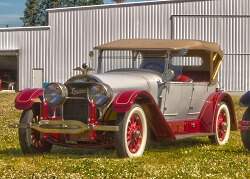

Locomobile Collection
Locomobile Automobile Collection
1900 Locomobile Steamcar Runabout
 Year: 1900
Year: 1900
Donor: Acquired with funds from Bill Bremmeyer
Engine: 2 Cyl., 5.5 HP
Transmission: None
Number of Doors: Open-doored
Curb Weight in Lbs: approx 650
One of the many things modern users of automobiles take for granted is that more often than not, our cars work without much effort on the part of the user. When automobiles first got on the scene the belief that a horseless carriage could function well was not held by many. All makers of automobiles contrived of various "tests" to build public confidence in their devices. The informational booklet that came with this Locomobile describes two of these tests.
"One of our 'Locomobiles' was run by an expert for 72 miles with 2.75 gallons of gasoline, at a cost of 17.5 cents. One tank of water sufficed for a run of 48 miles. The carriage was operated by an expert.
At a test made at Charles River Park, Boston, the 'Locomobile' climbed a 36% incline. Starting from Newton, traveling over all kinds of roads and carrying two persons, the 'Locomobile' climbed to the summit of Mt. Washington. Distance traveled to foot of mountain 205 miles. Average speed maintained 14.1 miles per hour. Accidents, none; neither on the trip, nor during the ascent nor descent. Gasoline consumed during the ascent, 1.75 gallons. Water consumed during ascent, 21 gallons."
1923 Locomobile Model 48 Sportif
Year: 1923
Donor: Wes & Nancy Lematta
Engine: 6 Cyl. with dual spark plugs, approx 120 HP
Transmission: Manual (4 speed)
Number of Doors: 4
Curb Weight in Lbs: approx. 6,000
This top-of-the-line model was produced from 1919 until the Locomobile Company folded in 1929. Although it was not innovative as far as luxury cars go, its workmanship was among the best in the world with a price to match.